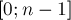
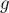
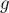

MAXimal
добавлено: 11 Jul 2008 10:35
редактировано: 8 Sep 2010 21:21
Содержание [скрыть]
Модульное линейное уравнение первого порядка
Постановка задачи
Это уравнение вида:
где — заданные целые числа,  — неизвестное целое число.
— неизвестное целое число.
Требуется найти искомое значение , лежащее в отрезке  (поскольку на всей числовой прямой, ясно, может существовать бесконечно много решений, которые будут отличаться друг друга на , где  — любое целое число). Если решение не единственно, то мы рассмотрим, как получить все решения.
— любое целое число). Если решение не единственно, то мы рассмотрим, как получить все решения.
Решение с помощью нахождения Обратного элемента
Рассмотрим сначала более простой случай — когда  и
и  взаимно просты. Тогда можно найти обратный элемент к числу , и, домножив на него обе части уравнения, получить решение (и оно будет единственным):
взаимно просты. Тогда можно найти обратный элемент к числу , и, домножив на него обе части уравнения, получить решение (и оно будет единственным):
Теперь рассмотрим случай, когда и не взаимно просты. Тогда, очевидно, решение будет существовать не всегда (например, ).
Пусть , т.е. их наибольший общий делитель (который в данном случае больше единицы).
Тогда, если  не делится на , то решения не существует. В самом деле, при любом левая часть уравнения, т.е. , всегда делится на , в то время как правая часть на него не делится, откуда и следует, что решений нет.
не делится на , то решения не существует. В самом деле, при любом левая часть уравнения, т.е. , всегда делится на , в то время как правая часть на него не делится, откуда и следует, что решений нет.
Если же делится на , то, разделив обе части уравнения на это (т.е. разделив , и на ), мы придём к новому уравнению:
в котором и уже будут взаимно просты, а такое уравнение мы уже научились решать. Обозначим его решение через  .
.
Понятно, что это будет также являться и решением исходного уравнения. Однако если 1">, то оно будет не единственным решением. Можно показать, что исходное уравнение будет иметь ровно решений, и они будут иметь вид:
Подводя итог, можно сказать, что количество решений линейного модульного уравнения равно либо , либо нулю.
Решение с помощью Расширенного алгоритма Евклида
Приведём наше модулярное уравнение к диофантову уравнению следующим образом:
где и — неизвестные целые числа.
Способ решения этого уравнения описан в соответствующей статье Линейные диофантовы уравнения второго порядка, и заключается он в применении Расширенного алгоритма Евклида.
Там же описан и способ получения всех решений этого уравнения по одному найденному решению, и, кстати говоря, этот способ при внимательном рассмотрении абсолютно эквивалентен способу, описанному в предыдущем пункте.